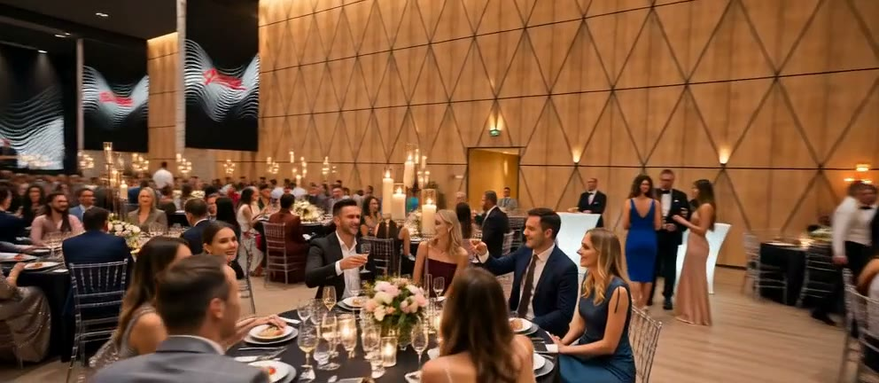

Дом культуры завода «Фрезер». Теперь — площадка для событий.
Отдельно стоящее здание с характером: 1575 м² внутри, 1500 м² собственного двора и десять метров до потолка. Готовим его к первым событиям.

Двенадцать секунд: от кирпичного фасада до сцены. Без звука.
Не лофт. Дом культуры.
Здание строили как Дом культуры завода «Фрезер» — место, куда после смены приходили всем районом. Оно и сегодня стоит отдельно: свой двор, свой кирпичный фасад, своя вывеска. Такое не спутать с типовой коробкой и не назвать лофтом.
Мы сохранили масштаб — десять метров до потолка и зал, в который можно завезти автомобиль, — и добавили то, чего требует современное событие: экраны, сцену, гримёрные, кухню полного цикла. Дом культуры остался домом культуры. Просто у него теперь другая программа.
новая программа

2-я Фрезерная, 3 — отдельно стоящее здание с собственной территорией.
1575 м2 внутри и ещё 1500 — во дворе
Все зоны в одном здании: не нужно разводить гостей по этажам чужого комплекса и подстраиваться под соседей.
- Уличная территорияСвой двор, заезд транспорта 1500 м²
- Основной залПотолки 10 м, 5 экранов 633 м²
- Велком-зонаГардероб на 1000 мест, 3 экрана 535 м²
- Второй этажОтдельный уровень над залом 407 м²
- VIP-ложаВнутри пространства второго этажа 300 м²
- СценаВ основном зале 55 м²
Один зал — шесть разных вечеров
-
Банкет 01
Посадка до 1000 гостей, кухня полного цикла на площадке.
-

Конференция 02
Пять экранов в зале, три в велком-зоне, сцена 55 м².
-

Концерт 03
Без ограничений по шуму, четыре гримёрные, свой двор.
-

Свадьба 04
Велком во дворе, регистрация в зале, отдельная VIP-ложа.
-

Корпоратив 05
Заезд автомобиля в зал, гардероб на 1000 мест.
-

Частное событие 06
Второй этаж и VIP-ложа 300 м² как отдельное пространство.
Как проходит день на площадке
Порядок один и тот же — меняется только содержание. Ниже то, из чего складывается сутки в «Фрезере».
-
01
Заезд и монтаж
Техника заходит через свой двор — 1500 м² улицы позволяют не занимать город. Если декорация или автомобиль не проходят в дверь, машину заводим прямо в зал.
-
02
Встреча гостей
Велком-зона 535 м² с гардеробом на 1000 мест и тремя экранами. Тысяча человек раздевается без очереди, а первый бокал наливают до того, как откроют зал.
-
03
Основная часть
Зал 633 м², сцена 55 м², пять экранов и десять метров над головой — под свет, конструкции и всё, что должно висеть высоко. Четыре гримёрные рядом со сценой.
-
04
Продолжение и разъезд
Ограничений по шуму нет — вечер заканчивается тогда, когда вы решите. Второй этаж 407 м² с VIP-ложей 300 м² работает как отдельная площадка для своих.
Кухня своя, полного цикла: от фуршета в велком-зоне до банкета на тысячу посадочных мест. Сервировку, свет и посуду собираем под сценарий вечера, а не по стандартному прайс-листу.
Отзывов пока нет — и мы их не придумываем
Площадка ещё не открылась: первых гостей мы только ждём. Как пройдут первые события, живые отзывы появятся в карточке «Фрезера» на Яндекс.Картах — там, где их нельзя отредактировать.

Подберём зал, дату и порядок дня
Напишите формат, дату и примерное число гостей — ответим, что из этого площадка закрывает сама, а что придётся привезти.